公司准备招聘一批具备 Java 基础的实习生学习 Android 开发。因此，后续会出一系列的 Android 开发入门、基础、高级教程。那么，从第零步，搭建开发环境开始。由于 Android 是基于 Java 平台开发的，因此还需要[安装 Java 环境](/blog/2018-08-01)。
网上有很多搭建 Android 开发环境的教程，主要是基于 Eclipse 和 AndroidStudio 。其中，在下载 SDK 模块时，讲到需要设置代理。个人认为该方式可有可无，目前已经可以在大陆下载全部 SDK 代码，和访问 Android 官网。
1 下载AndroidStudio
AndroidStudio 3.3下载
SDK Tools下载
2 安装AndroidStudio
安装步骤如下：
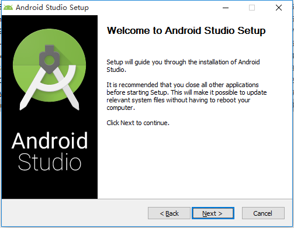 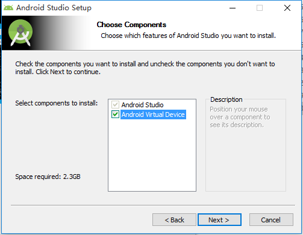 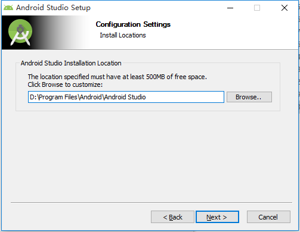 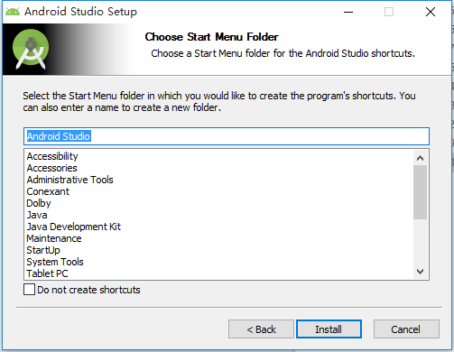 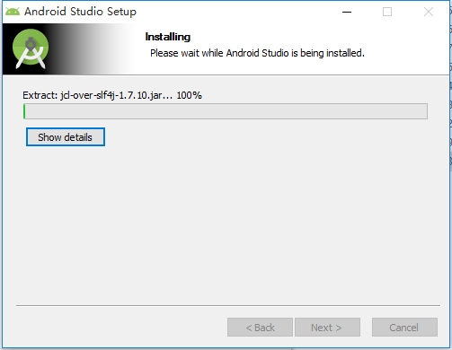 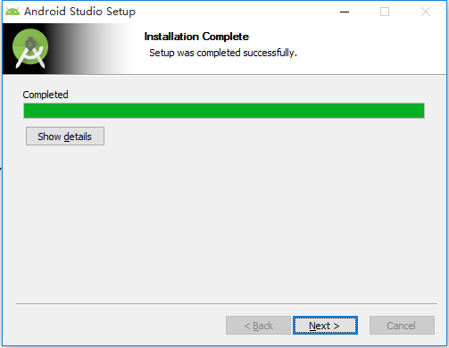 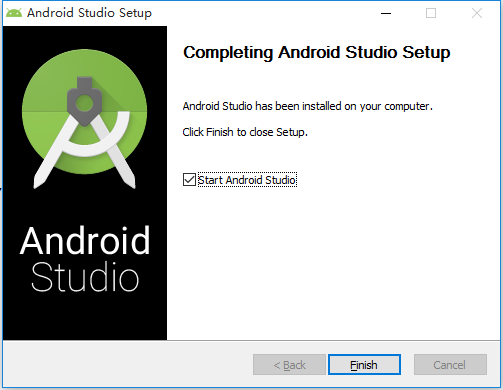3 配置AndroidStudio
第一次启动AndroidStudio，会弹出配置提示。如果电脑中已经安装过AS，可以使用上一个AS的配置，在这里，展示如何第一次配置AS。步骤如下：
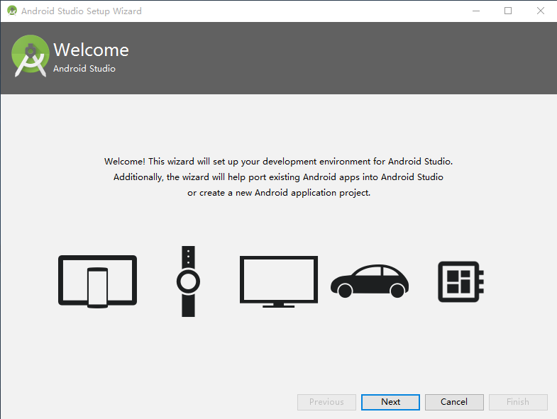建议采用自定义配置模式。
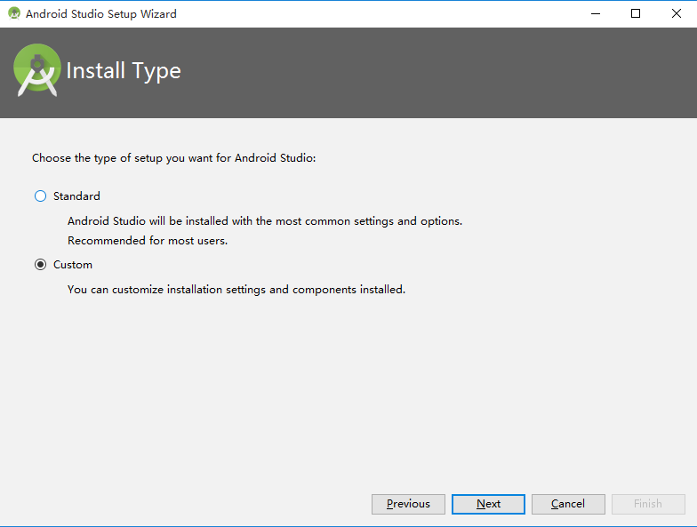 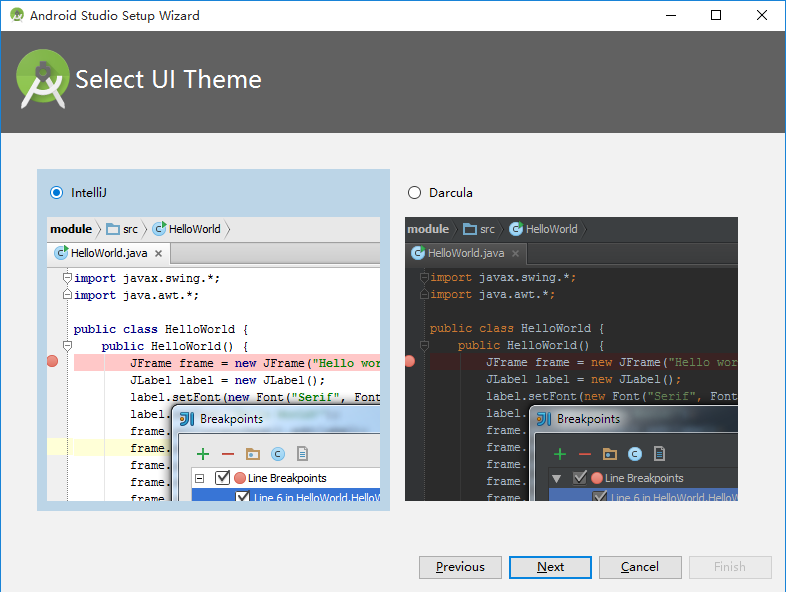为不增加配置后的下载时间，此处暂不下载安卓模拟器和硬件加速插件。指定的sdk路径即之前下载的SDK Tools 解压后的路径。
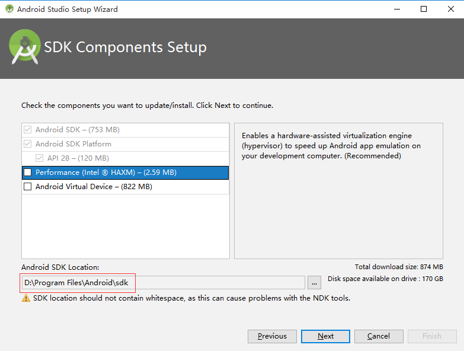下图显示需要下载的组件大小，点击finish后，开始下载模式。
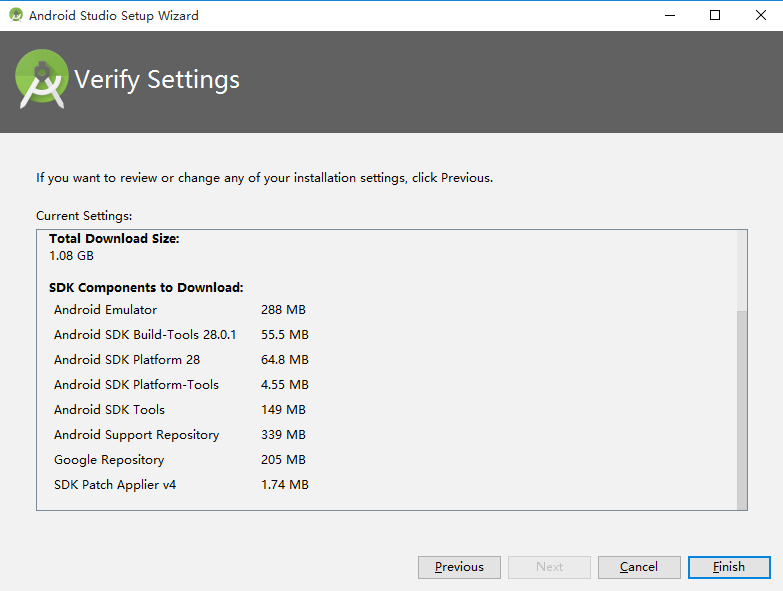 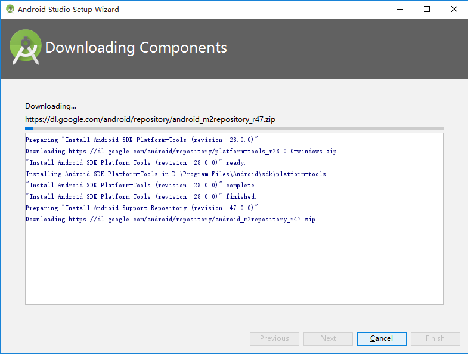如果安装jdk11之后，无法正确打开AndroidStudio。请检查是否配置jre目录。其他版本 jdk 不存在这个问题。如果是下载的 zip 包，建议将 studio.exe 添加到桌面快捷方式，而不是 studio64.exe
创建第一个Android工程，[请跳转](/blog/2019-01-24/)。
觉得有用？那打赏一个呗。[去打赏](/donate/)